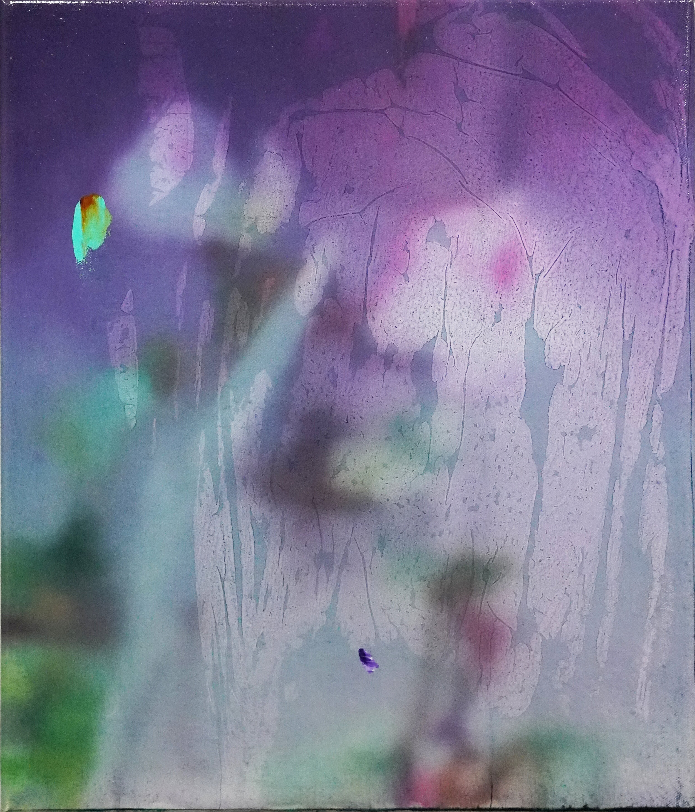
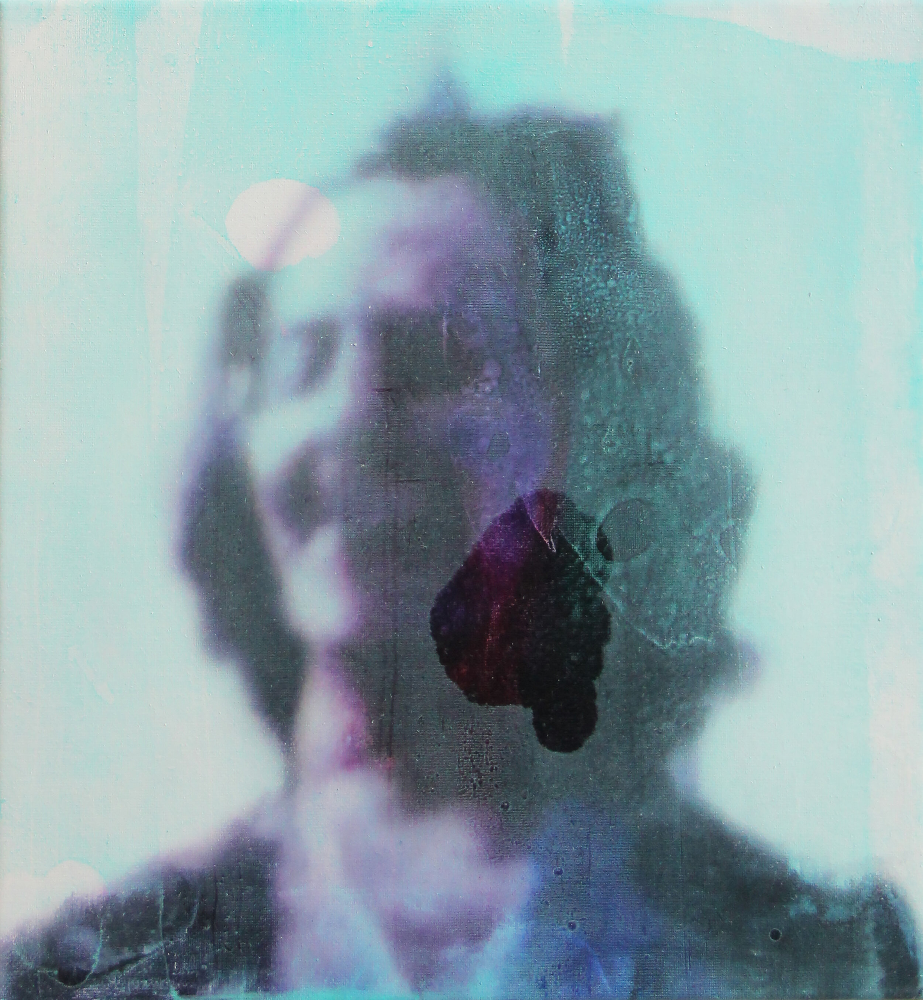

Wendelin Wohlgemuth's every painting is somewhat out of focus, becoming semi-abstract, detached from reality, and transcending time. Like fragments of memory, some recognizable elements attract the viewer: a view by a pool, a rose, a woman by the pond. Each work provides us with a way to enter the scene, a mark that we can understand and relate to. However, these images seem distant in our minds, like fading memories. In his paintings, Wohlgemuth perfectly captures not only an image, but also a specific feeling, mood, or emotion that may take us back to our own memories from the past. They form a dreamlike, hazy image, like a ghost.


-

-
